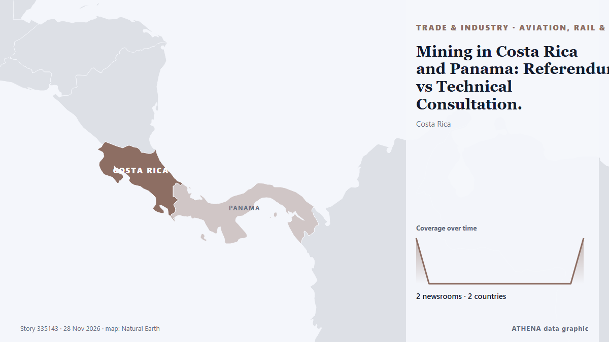

Αερομεταφορές, σιδηρόδρομος & οδικές
ΧορηγούμενοΠαρουσιάζεται από  Cybernetics and Artificial Intelligence Lab Welcome to the Cybernetics and Artificial Intelligence Laboratory, established at the Department of Business Administration of the National and Kapodistrian University of Athens. The lab is headed by Professor Dimitrios Thomakos. The lab aims to do research that can be published in top venues. Our research uses tools and methods of Artificial Intelligence, and lies in the following areas: - Forecasting - Decision making - Cyber security - Finance We are always looking forward to collaborating with exceptional students!
Cybernetics and Artificial Intelligence Lab Welcome to the Cybernetics and Artificial Intelligence Laboratory, established at the Department of Business Administration of the National and Kapodistrian University of Athens. The lab is headed by Professor Dimitrios Thomakos. The lab aims to do research that can be published in top venues. Our research uses tools and methods of Artificial Intelligence, and lies in the following areas: - Forecasting - Decision making - Cyber security - Finance We are always looking forward to collaborating with exceptional students!
| 15 Νοε | 0 |
|---|---|
| 16 Νοε | 0 |
| 17 Νοε | 0 |
| 18 Νοε | 0 |
| 19 Νοε | 0 |
| 20 Νοε | 2 |
| 21 Νοε | 0 |
| 22 Νοε | 1 |
| 23 Νοε | 2 |
| 24 Νοε | 3 |
| 25 Νοε | 9 |
| 26 Νοε | 3 |
| 27 Νοε | 4 |
| 28 Νοε | 0 |
Οι τίτλοι των ειδήσεων παρουσιάζονται στα αγγλικά, όπως δημοσιεύτηκαν.

Mining in Costa Rica and Panama: Referendum vs Technical Consultation.
Costa Rica and Panama have taken divergent paths in the last 24 hours to define... από Newsroom Panama
easyJet cabin crew cancel December strike in Portugal
The five-day strike planned for 19 to 23 December has been called off as negotiations resume. από The Portugal News
Thanksgiving storm on U.S. East Coast knocks out power, disrupts flights
A powerful storm disrupted the Thanksgiving holiday along much of the U.S. από CBC News (alternative feed)
Hyderabad family gets Rs 70,000 after airline cancels direct Thailand flights
A family from Hyderabad faced flight cancellations by an airline while traveling to Thailand. από Times of India
Chabahar–Zahedan railway 96% completed
The CEO of the Construction and Development of Transportation Infrastructures Company announced the completion of rail-laying on the 480-kilometer Chabahar–Zahedan railway route and 96% physical… από Tehran Times
Qantas plane aborted Sydney landing to avoid collision with New Zealand carrier
An investigation has been launched after Qantas pilots were forced to delay their landing while two aircraft cleared the runway. από Sydney Morning Herald
Déjà vu in Miami as FedEx MD-11 freighter overshoots runway
Call it runway redux at Miami airport on Saturday when a FedEx cargo jet ran off the runway into a grassy field. από FreightWaves
Thanksgiving has a bumpy history
The history of the American Thanksgiving holiday has evolved from early colonial feasts and Revolutionary War era proclamations to modern debates over its religious nature and official date. από The Hill
Belgium: Farmers and tractors descend on Brussels to defend EU subsidies
Around 200 representatives of European farming unions marched through Brussels, Belgium, on Thursday 26 November 2026 to protest against proposed cuts to the European Union's Common Agricultural… από Euronews English
Flydubai to resume Dubai–Tel Aviv flights from December 3 after two-month suspension
Flydubai will resume flights between Dubai and Tel Aviv on December 3 following a two-month suspension and approvals from the relevant authorities. από Arabian Business
Love between dogs: first bite goes to blind friend
More than a decade later, two blind airline passengers say they have finally been vindicated, after the Canadian Human Rights tribunal upheld their complaint of discrimination, which was filed after… από The Canadian Press (via CityNews)
In Lebanon, the opening of a second airport reflects political shifts
Kleiat Airport, located on the Mediterranean coast, about 20km from the border crossing to Syria, will offer another gateway to Lebanon. από The Straits Times
Unionized rail workers to launch work-to-rule campaign Thursday
SEOUL, Nov. 25 (Yonhap) -- Unionized workers of Korea Railroad Corp. από Yonhap (English)
One dead, five soldiers injured in Circle Railway demolition clash
One person has died and five soldiers have sustained injuries following a violent confrontation between security personnel and residents during a demolition exercise at the ECOMOG Railway Lane… από GBC Ghana Online
CJP’s Saurav Das moves Delhi HC after being stopped from travelling to UK
The Ministry of External Affairs said the passport office had asked Das to respond to a notice over alleged discrepancies and not use the document until then. από Scroll.in
Sri Lanka allows Indians to travel without ETA approval temporarily | What travellers should know
Sri Lanka has temporarily waived prior ETA approval for Indian travellers while its ETA system undergoes maintenance. από Livemint
Assam’s Silchar set to get new greenfield airport as Cabinet approves Rs 2,014-crore project
AAI to develop airport at Doloo to overcome capacity constraints at the existing civil enclave. από The Hindu BusinessLine
Indonesia foils attempts to smuggle 25.8kg of gold to Malaysia this month
JAKARTA: Indonesian customs authorities have foiled three attempts this month to smuggle 25.8kg of gold worth an estimated 62.5 billion rupiah (RM14.06 million) to Malaysia. από New Straits Times
MAG to acquire 10 Boeing 787 Dreamliners with option for 6 more
MAG president and group CEO Nasaruddin A Bakar says Malaysia Airlines will be the first Malaysian airline to operate the 787 Dreamliner variant. από Free Malaysia Today